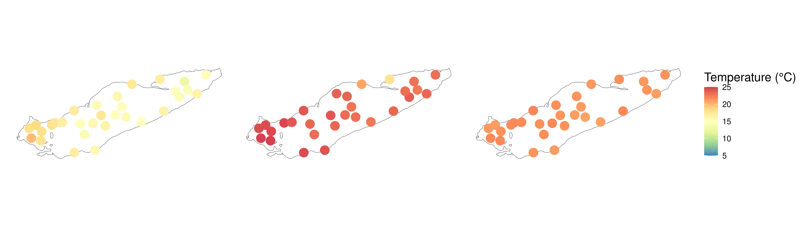
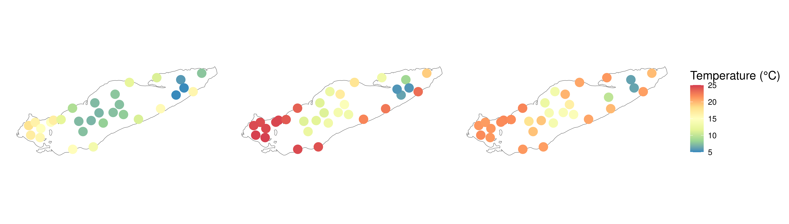
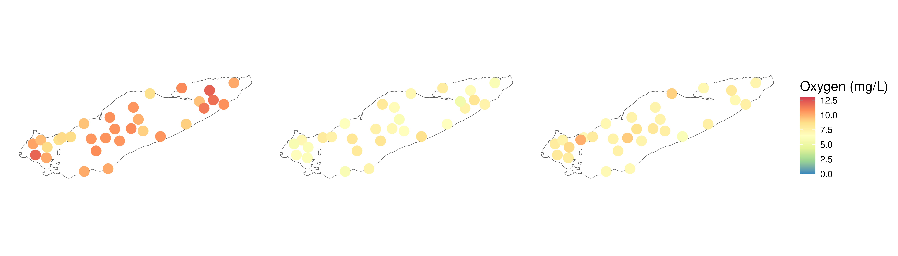
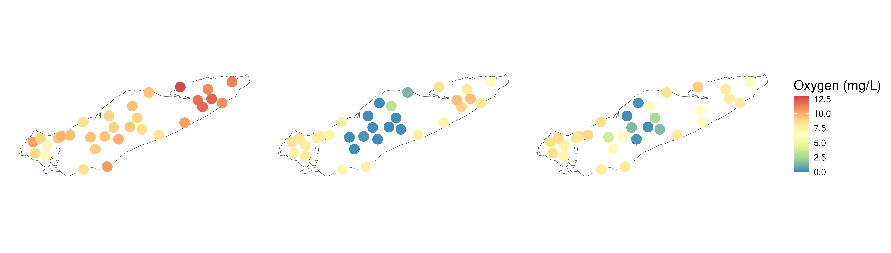
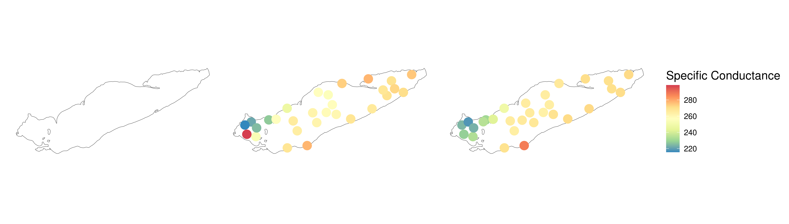

# Load Packages
pacman::p_load(tidyverse, oce, install = FALSE)
# load colors and shapes
source("code/R/plotting_aesthetics.R")Curating and Cleaning CTD Casts for Metadata
Purpose of this document
Load Packages and Functions
This is like my least favorite job lol.
Find files
may_ctd <- list.files("data/05_Metadata_Curation/ctd_casts/May/", full.names = TRUE)
august_ctd <- list.files("data/05_Metadata_Curation/ctd_casts/August", full.names = TRUE)
september_ctd <- list.files("data/05_Metadata_Curation/ctd_casts/September", full.names = TRUE)Mkay so here’s the deal. during the equilibration phase, sometimes the difference between the two conductivity sensors exceeds -99, at which point a whole host of parsing problems occurs. It’s incredibly annoying. The best solution is to remove that phase manually within the files themselves, which I’ve done for the files we have on the server. However, if you download raw files from GLNPO, be prepared that the below code will fail to parse, because of issues in the data files themselves.
clean_casts <- function(ctd_file){
ctd_file %>%
read.ctd() %>%
ctdTrim(method = "downcast", parameters = list(pmin = 1.5)) %>%
ctdDecimate(p = 0.1, na.rm = TRUE)
}
clean_may_casts <- map(may_ctd, clean_casts)
clean_august_casts <- map(august_ctd, clean_casts)
clean_september_casts <- map(september_ctd, clean_casts)Working on names
clean_may_names <- may_ctd %>%
basename %>%
str_remove(".cnv") %>%
str_remove(".*_") %>%
str_replace("G", "6") %>% # This is to deal with the G09 - we'll get back to it
str_remove_all("[^0-9]") %>%
str_replace("609", "G09")
clean_august_names <-
august_ctd %>%
basename %>%
str_remove(".cnv") %>%
str_remove(".*_") %>%
str_replace("G", "6") %>% # This is to deal with the G09 - we'll get back to it
str_remove_all("[^0-9]") %>%
str_replace("609", "G09")
clean_september_names <- september_ctd %>%
basename %>%
str_remove(".cnv") %>%
str_remove(".*_") %>%
str_replace("G", "6") %>% # This is to deal with the G09 - we'll get back to it
str_remove_all("[^0-9]") %>%
str_replace("609", "G09") summarize_and_extract <- function(cast){
set_up <- cast@data %>%
as.data.frame() %>%
filter(!is.na(depth)) %>%
select(-pressure, -oxygenRaw, -scan) %>%
relocate(depth)
surface <- set_up %>%
filter(depth < 2) %>%
summarize(across(temperature:salinity, .names = "surf_{.col}", \(x)mean(x,na.rm = TRUE)))
bottom <- set_up %>%
slice_max(n = 3, order_by = depth) %>%
summarize(across(temperature:salinity, .names = "bottom_{.col}", \(x)mean(x,na.rm = TRUE)))
integrated_surface <- set_up %>%
filter(depth < 10) %>%
summarize(across(temperature:salinity, .names = "intsurf_{.col}", \(x)mean(x,na.rm = TRUE)))
cbind(surface, bottom, integrated_surface)
}
summarize_and_extract_as <- function(cast){
set_up <- cast@data %>%
as.data.frame() %>%
filter(!is.na(depth)) %>%
select(-pressure, -oxygenRaw, -scan, -temperature2, -conductivity2, -oxygenRaw2, -oxygen2, -conductivityDifference) %>%
relocate(depth)
surface <- set_up %>%
filter(depth < 2) %>%
summarize(across(temperature:salinity, .names = "surf_{.col}", \(x)mean(x,na.rm = TRUE)))
bottom <- set_up %>%
slice_max(n = 3, order_by = depth) %>%
summarize(across(temperature:salinity, .names = "bottom_{.col}", \(x)mean(x,na.rm = TRUE)))
integrated_surface <- set_up %>%
filter(depth < 10) %>%
summarize(across(temperature:salinity, .names = "intsurf_{.col}", \(x)mean(x,na.rm = TRUE)))
cbind(surface, bottom, integrated_surface)
}
may_ctd_df <- map(clean_may_casts, summarize_and_extract) %>%
bind_rows() %>%
mutate(Station_ID = clean_may_names,
Month = "May")
august_ctd_df <- map(clean_august_casts, summarize_and_extract_as) %>%
bind_rows() %>%
mutate(Station_ID = clean_august_names,
Month = "August")
september_ctd_df <- map(clean_september_casts, summarize_and_extract_as) %>%
bind_rows() %>%
mutate(Station_ID = clean_september_names,
Month = "September")
all_ctd_summary <-
may_ctd_df %>%
rbind(august_ctd_df) %>%
rbind(september_ctd_df) %>%
mutate(Station_ID = ifelse(Station_ID == "09", "9", Station_ID))Okay, now bringing in some additional metadata
station_lats <- readxl::read_xlsx("data/external_data/20240404_Scofield_Erie2024_CSMI_StationList.xlsx") %>%
select(Station_ID = Our_Station_ID, Latitude = lattDD_target, Longitude = LonDD_target)
all_ctd_summary$Station_ID[!all_ctd_summary$Station_ID %in% station_lats$Station_ID]character(0)summarized_ctd_latlon <-
all_ctd_summary %>%
left_join(station_lats) Mapping
pacman::p_load(sf, tmap, install = FALSE)
# Define some shapes and objects
raw_erie <- read_sf("data/spatial_imports/hydro_p_LakeErie/hydro_p_LakeErie.shp") %>%
st_transform(crs = "EPSG:4326")
erie_outline <- raw_erie %>%
st_union()
ctd_sf <- summarized_ctd_latlon %>%
filter(!is.na(Longitude)) %>%
st_as_sf(coords = c("Longitude","Latitude"), crs = "EPSG:4326") %>%
mutate(Month = factor(Month, levels = c("May","August","September")))range(c(ctd_sf$surf_temperature, ctd_sf$bottom_temperature), na.rm = TRUE)[1] 4.974969 24.968925ctd_sf %>%
ggplot() +
geom_sf(data = erie_outline, fill = NA) +
geom_sf(data = ctd_sf, aes(color = surf_temperature), size = 5, alpha = 1) +
scale_color_distiller(palette = "Spectral", na.value = "white",
limits = c(5, 25)) +
labs(color = "Temperature (°C)") +
facet_wrap(~Month) +
theme(axis.line = element_blank(),
axis.text = element_blank(),
axis.ticks = element_blank(),
strip.text = element_blank())
ctd_sf %>%
ggplot() +
geom_sf(data = erie_outline, fill = NA) +
geom_sf(data = ctd_sf, aes(color = bottom_temperature), size = 5, alpha = 1) +
scale_color_distiller(palette = "Spectral", na.value = "white",
limits = c(5, 25)) +
labs(color = "Temperature (°C)") +
facet_wrap(~Month) +
theme(axis.line = element_blank(),
axis.text = element_blank(),
axis.ticks = element_blank(),
strip.text = element_blank())
range(c(ctd_sf$surf_oxygen, ctd_sf$bottom_oxygen), na.rm = TRUE)[1] 0.1239907 12.8159969ctd_sf %>%
ggplot() +
geom_sf(data = erie_outline, fill = NA) +
geom_sf(data = ctd_sf, aes(color = surf_oxygen), size = 5, alpha = 1) +
scale_color_distiller(palette = "Spectral", na.value = "white",
limits = c(0, 13)) +
labs(color = "Oxygen (mg/L)") +
facet_wrap(~Month) +
theme(axis.line = element_blank(),
axis.text = element_blank(),
axis.ticks = element_blank(),
strip.text = element_blank())
ctd_sf %>%
ggplot() +
geom_sf(data = erie_outline, fill = NA) +
geom_sf(data = ctd_sf, aes(color = bottom_oxygen), size = 5, alpha = 1) +
scale_color_distiller(palette = "Spectral", na.value = "white",
limits = c(0, 13)) +
labs(color = "Oxygen (mg/L)") +
facet_wrap(~Month) +
theme(axis.line = element_blank(),
axis.text = element_blank(),
axis.ticks = element_blank(),
strip.text = element_blank())
ggsave("test.png", width = 14, height = 4)
ctd_sf %>%
ggplot() +
geom_sf(data = erie_outline, fill = NA) +
geom_sf(data = filter(ctd_sf, Month != "May"), aes(color = surf_specificConductance), size = 5, alpha = 1) +
scale_color_distiller(palette = "Spectral", na.value = "white") +
labs(color = "Specific Conductance") +
facet_wrap(~Month) +
theme(axis.line = element_blank(),
axis.text = element_blank(),
axis.ticks = element_blank(),
strip.text = element_blank())